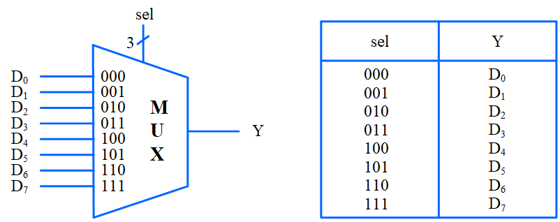
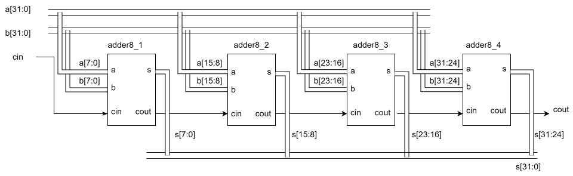

多路选择器和层次化设计
实验2 多路选择器和层次化设计¶
1 多路选择器¶
- 本关任务1 ：采用持续赋值语句assign完成八选一多路选择器的建模。
- 本关任务2 ：采用条件表达式完成八选一多路选择器的建模
- 本关任务3 ：基于过程块，采用if...else分支结构语句完成八选一多路选择器的建模。
- 本关任务4 ：基于过程块，采用case分支结构语句完成八选一多路选择器的建模。
多路选择器的逻辑功能¶
多路选择器是一种多输入单输出的组合逻辑电路，常用符号MUX表示。
多路选择器的端口包括数据输入端口、选择控制端口和数据输出端口。其中，数据输入端口的数目k和选择控制端口的数目n应满足
\(k \le 2^n\)
多路选择器根据选择控制端口的值从多个数据输入中选择一个送到输出端口。下图给出了八选一多路选择器的逻辑框图和真值表。
8选一多路选择器的逻辑框图和真值表

编程要求¶
分别完成下面代码的编写和仿真测试，为了避免代码覆盖，可以分别单独命名子任务文件名和测试文件名。
比如： mux8_assign.sv , tb_mux8_assign.sv ; 相应的修改文件module和test_bench代码。
- 1 采用持续赋值语句assign完成八选一多路选择器的建模。 预计代码1行
- 2 ：采用条件表达式完成八选一多路选择器的建模 采用 ? : 条件表达式实现八选一多路选择器
- 3 ：基于过程块，采用if...else分支结构语句完成八选一多路选择器的建模 预计代码11行
- 4 ：基于过程块，采用case分支结构语句完成八选一多路选择器的建模。 预计代码13行
代码框架：
module mux8 (
input [7 : 0] D,
input [2 : 0] sel,
output Y
);
/****** Begin ******/
/****** End ******/
endmodule
- 8位输入端口D：待选择的8位信号。
- 3位输入端口sel：选择信号。
- 1位输出端口Y：被选择输出的信号。
- 建模需要使用条件运算符。
语法检查
使用iverilog 不跑仿真，只是检查语法问题，可以用下面的语句示例
iverilog -g2012 -t null mux8.sv
仿真测试¶
仿真测试代码的示例
代码及注释如下：
module tb_mux8();
// 连接被测模块的端口信号声明
logic [7:0] D;
logic [2:0] sel;
logic Y;
// 指明仿真波形输出文件名和模块名
initial begin
$dumpfile("tb_mux8.vcd");
$dumpvars(0, tb_mux8);
end
// 实例化被测模块
mux8 dut (
.D(D),
.sel(sel),
.Y(Y)
);
initial begin
// 显示输出表头
$display("D | sel | Y");
// 测试用例1: D = 8'b0101_0101
D = 8'b0101_0101;
// 循环测试所有选择信号
for (int i = 0; i < 8; i++) begin
sel = i;
#10;
$display("%b | %b | %b", D, sel, Y);
if (Y !== D[sel]) begin
$display("ERROR: mismatch at sel=%3b -> expected Y=%b, got Y=%b",
sel, D[sel], Y);
$fatal(1, "mux8 functional check failed");
end
end
$display("test1 passed.");
D = 8'b1010_1010;
$display("D | sel | Y");
for (int i = 0; i < 8; i++) begin
sel = i;
#10;
$display("%b | %b | %b", D, sel, Y);
if (Y !== D[sel]) begin
$display("ERROR: mismatch at sel=%3b -> expected Y=%b, got Y=%b",
sel, D[sel], Y);
$fatal(1, "mux8 functional check failed");
end
end
$display("test2 passed.");
$finish;
end
endmodule
操作步骤¶
4种实验方式的代码需要分别实验，以任意一种实现为例。
if-else语句 的实现方式 iverilog 不支持，OJ系统可以验证
-
1 创建一个实验目录(不要有中文)，建议每个实验一个目录；
-
2 下载tb_mux8下载链接到实验目录；
-
3 vscode 打开文件夹，选择实验目录；
-
4 vscode 创建 mux8.sv，复制代码模板内容，到mux8.sv，补充实验代码。不要修改文件名否则需要相应修改iverilog的命令参数。不要修改module名和引脚名，否则需要修改相应的测试文件tb_mux8.sv；
-
5 执行 iverilog 编译命令，生成 tb_mux8.out文件，命令说明参考实验1
-
6 执行 vvp tb_mux8.out 命令进行仿真；
-
7 gtkwave 或 surfer 查看 仿真波形。
提示
** 在设计过程中尽量做到文件名和 module 名一致；**
如果你厌倦了上面的命令，可以使用makefile的方式来快速执行上述命令。
这里需要安装 gnumake，linux 安装很方便，windows安装方法可以参考：windows下安装make，使用makefile文件;
下载Makefile文件到实验目录(不要改名)。这个文件是个通用模板，更换其他设计时，把这个文件复制到相应目录，把下面这行的mux8改成你的设计代码即可。
DUT ?= mux8
在vscode的终端窗口执行 make 就可以完成编译、仿真和打开波形。
看波形默认用 GTKWave；想改用 Surfer 就执行 make wave WAVE=surfer，也可以修改Makefile, 改成默认surfer。
2 层次化设计¶
任务需求¶
我们需要验证前面使用4个8位加法器构建32位加法器的任务，示意图如下：

- 8位加法器代码 adder_8.sv
32位加法器模板如下：
module adder_32 (
input logic [31:0] a,
input logic [31:0] b,
input logic cin,
output logic [31:0] s,
output logic cout
);
endmodule
- 32位加法器 testbench tb_adder_32.sv
根据提供的8位加法器代码，采用名称映射方法完成32位加法器的设计，并完成仿真。
这里多次调用还可以 generate 语句，推荐搜索 verilog generate 相关资料并尝试改写设计代码。
输入仿真命令。
iverilog -g2012 -s tb_adder_32 -o tb_adder_32.out adder_8.sv tb_adder_32.sv adder_32.sv
仿真测试结果。
VCD info: dumpfile tb_adder_32.vcd opened for output.
a + b + cin | s cout
303379748 + 3230228097 + 0 | 3533607845 0
2223298057 + 2985317987 + 1 | 913648749 1
112818957 + 1189058957 + 0 | 1301877914 0
2999092325 + 2302104082 + 1 | 1006229112 1
15983361 + 114806029 + 0 | 130789390 0
992211318 + 512609597 + 1 | 1504820916 0
1993627629 + 1177417612 + 0 | 3171045241 0
2097015289 + 3812041926 + 1 | 1614089920 1
3807872197 + 3574846122 + 0 | 3087751023 1
1924134885 + 3151131255 + 1 | 780298845 1
2301810194 + 1206705039 + 0 | 3508515233 0
2033215986 + 3883308750 + 1 | 1621557441 1
4093672168 + 3804909253 + 0 | 3603614125 1
777537884 + 3733858493 + 1 | 216429082 1
2527811629 + 2997298789 + 0 | 1230143122 1
2985255523 + 91457290 + 1 | 3076712814 0
All tests passed.
tb_adder_32.sv:39: $finish called at 160 (1s)